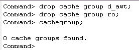

The steps below show how you can remove cache groups from the cache database cachedb1_1211.
The steps in this example must be performed as the cache manager user in the cache database. Log in to ttIsql as the cache manager user cacheadm, passing in both the TimesTen and Oracle passwords.
ttisql
connect "dsn=cachedb1_1211; uid=cacheadm; pwd=cacheadm; oraclepwd=cacheadm";
1. Stop the Replication Agent
Use the built-in procedure ttRepStop to stop the replication agent, if it has not already been stopped.
call ttrepstop;
2. Remove the Cache Groups
The example below shows how you can remove the two cache groups that were created in the earlier section.
Enter the following DROP CACHE GROUP statements in ttIsql, to remove the cache groups cacheadm.d_awt and cacheadm.ro, and their corresponding cache tables.
drop cache group d_awt;
drop cache group ro;
Use the ttIsql command cachegroups to verify the removal of both cache groups from the cache database.
cachegroups;

3. Stop the Cache Agent
Use the built-in procedure ttCacheStop to stop the cache agent process.
call ttcachestop;
For more information on removing cache groups from a cache database, refer to the documentation here